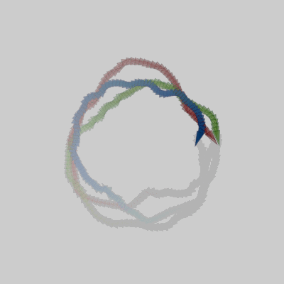
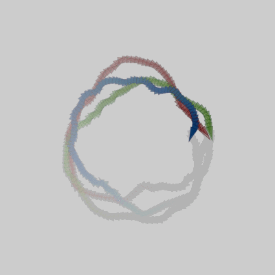

Uses the mover from yesterday, but now there are 3 of them all governed by a NoiseLoop library. The gif is quite compressed but I liked the dithering in the trails. It is "only" 482 KB. It is the one on the left.
- Move noise loop code into library.
- Update it to use vectors.
- Make the results reproducible. Same sketch will load every time.
- Automatically Record during a user defined window (not frame count dependent). That is turned off on the posted sketch. Both recording every frame at a lower sample rate. Note: The
pixelDensitywas set to 1. - Frames -> gif options: They can get GIANT for embedding in a web page. Also, when optimizing the first version I did, it made the movers disappear. I turned the background back on.
- ImageMagick
- The included gif:
convert *.png -loop 0 -layers OptimizeFrame first_output.gifis the way to go, but on this particular animation the movers are very hard to see. convert first_output.gif -loop 0 -colors 32 second_output.gif- Not used, but add
-delay 50to get 2 frames/second for example. That said, I did not see much of a speed differnece when i was trying it. Instead I deleted all the even file names to tighten it up. -loop 0loops the frames forever-colors 64changes the colors depth.- more image optimization
- FFMPEG: Much nicer looking using the simple command, but GIANT gif files. Will consider using it for mpeg files.
 
